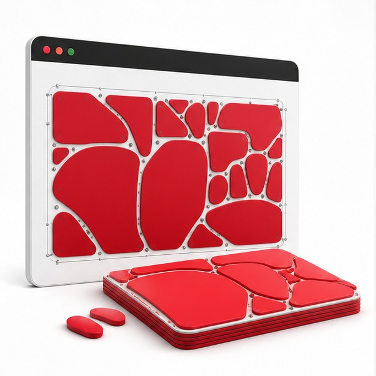

คำนวณจากรูปทรงจริง
วางชิ้นเว้า ตัวอักษร และรูปทรงซับซ้อนให้ประกบกันได้แน่นกว่าการใช้กรอบสี่เหลี่ยม
ECUT Nesting Pro
True-Shape Nesting สำหรับ Adobe Illustrator ทดลองตำแหน่งและมุมหมุนหลายแบบอัตโนมัติ แล้วพรีวิวผลลัพธ์ก่อนย้ายชิ้นงานจริง

วางชิ้นเว้า ตัวอักษร และรูปทรงซับซ้อนให้ประกบกันได้แน่นกว่าการใช้กรอบสี่เหลี่ยม
Tilt-Match ช่วยลดช่องว่างเล็ก ๆ ที่เกิดจากการหมุนแบบขั้นตายตัว
กำหนดขอบเขตวัสดุเป็นรูปทรงไม่สม่ำเสมอ เหมาะกับเศษแผ่นจากงานก่อน
Single License
จ่ายครั้งเดียว ใช้งานได้ตลอด สำหรับ 1 เครื่อง รวมอัปเดตและคู่มือภาษาไทย